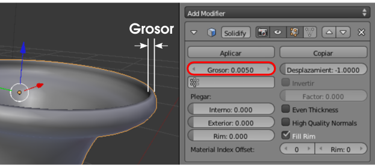

Modificador Solidificar
Es cierto que a la hora de diseñar el perfil podíamos considerar el grosor de la cerámica y que se generara con Girar. Pero no es la mejor opción. Para eso está el modificador Solidificar.
Aunque lo podemos añadir en Modo Edición  , lo mejor es estar el Modo Objeto
, lo mejor es estar el Modo Objeto  :
:
- Seleccionamos el objeto de la ánfora.
- Le aplicamos el modificador Solidificar.

Esto hace que la malla tenga asignados dos modificadores (este y Subdivisión). Y es un problema porque Blender aplica los modificadores en el orden en el que han sido creados; y no es lo mismo primero subdividir y luego solidificar que al contrario. Para nuestros fines lo mejor es invertir el orden usando una de las flechas que se indican a continuación.
Los parámetros del modificador Solidificar dependen en buena medida de nuestro gusto. Atenderemos fundamentalmente a Grosor.
Plegar
Los parámetros relativos a Plegar son muy interesantes al determinar si el grosor queda aristado en el interior, en el exterior, en ambos o en ninguno. Compruébalo.
Aplicar un modificador
Mientras que un modificador como Subdivisión conviene tenerlo siempre editable (al menos hasta última hora), otros modificadores como Solidificar conviene aplicarlos al darles el visto bueno (aunque esto no es obligatorio, es nuestra recomendación). Al pulsar en Modo Objeto  el botón Aplicar conseguimos que en la malla se genere todo lo necesario para que mantenga su apariencia mientras que el modificador desaparece. La consecuencia negativa es evidente: ya no podremos editar sus parámetros.
el botón Aplicar conseguimos que en la malla se genere todo lo necesario para que mantenga su apariencia mientras que el modificador desaparece. La consecuencia negativa es evidente: ya no podremos editar sus parámetros.